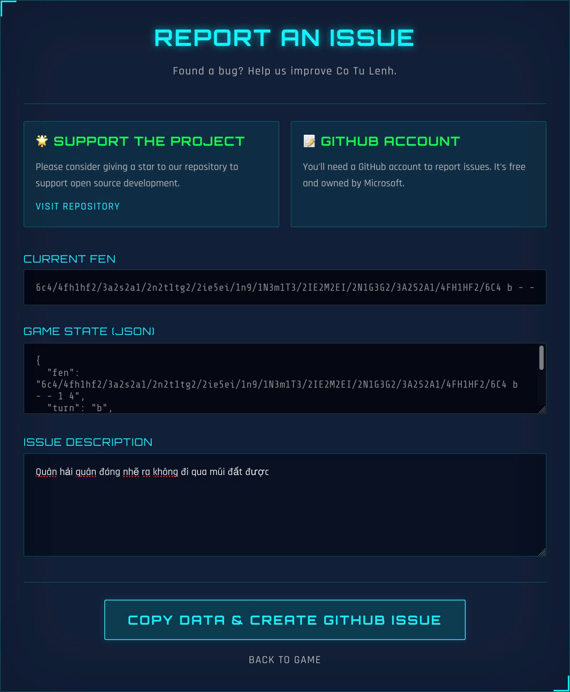
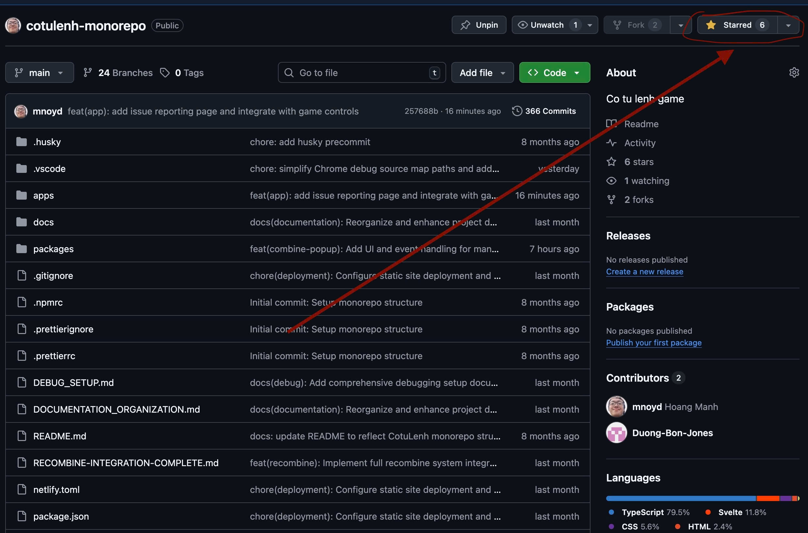

Thông Báo Update & Hướng Dẫn
Phiên bản Cờ Tư Lệnh (MVP) đã được cập nhật sửa lỗi và thêm tính năng báo cáo bug.
Quy Trình Báo Lỗi (Bug Report)
Trong quá trình chơi (cả trên Mobile và PC), nếu bạn gặp lỗi (đi sai luật, lag, hiển thị sai...), hãy bấm vào nút REPORT ở menu.

Một bảng thông báo sẽ hiện ra. Bạn hãy điền mô tả ngắn gọn lỗi gặp phải vào ô trống.
Sau đó bấm nút lớn: COPY DATA & CREATE GITHUB ISSUE.

Trình duyệt sẽ tự mở trang GitHub Issue. Bạn chỉ cần nhấn Ctrl + V (Paste)
vào ô nội dung.
Hệ thống đã tự copy sẵn trạng thái bàn cờ (FEN) và log game để tác giả dễ debug.
Lưu ý: Bạn cần đăng nhập tài khoản GitHub (miễn phí) để gửi báo cáo.
🌟 Ủng hộ dự án Open Source
Dự án được phát triển miễn phí vì cộng đồng. Nếu thấy thú vị, hãy tặng mình một Star trên GitHub nhé!
⭐️ Star Repository